Calidad, naturalidad y belleza, integrando productos naturales con las mejores tecnologías.
Una selección de piscinas de arena Bio.design instaladas en todo el mundo por la red internacional de concesionarios.
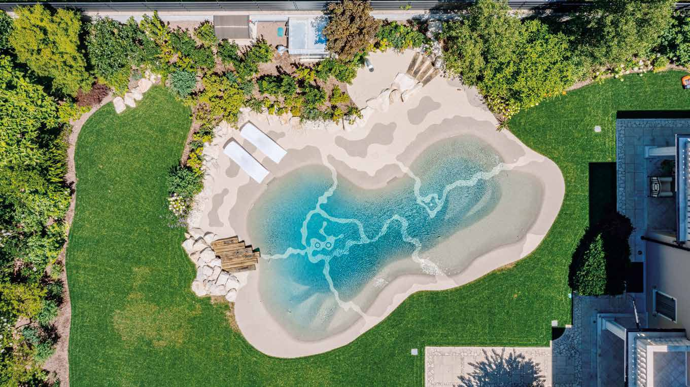
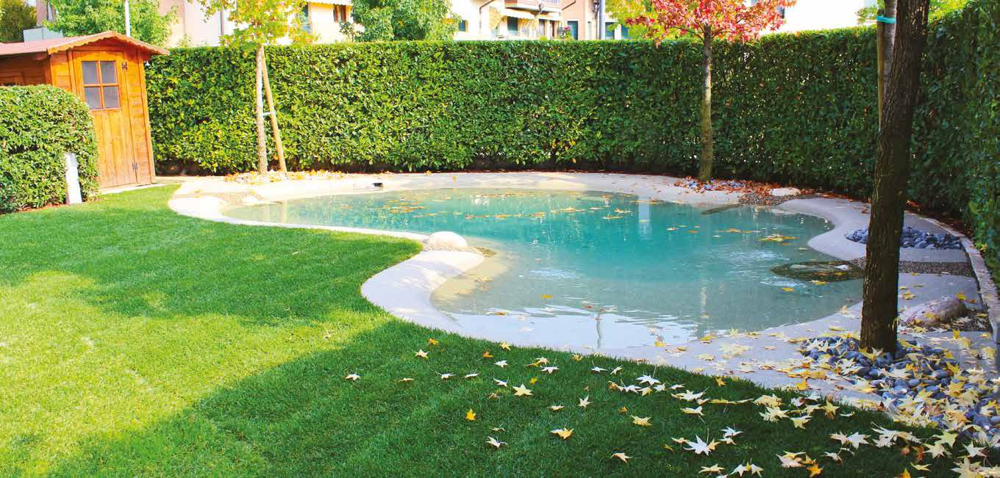
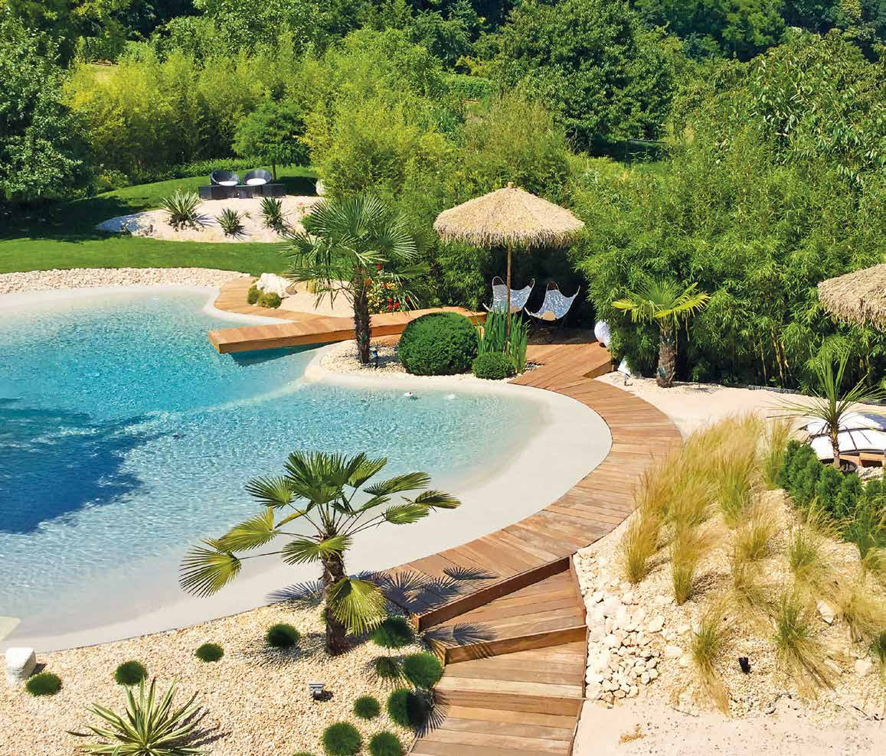
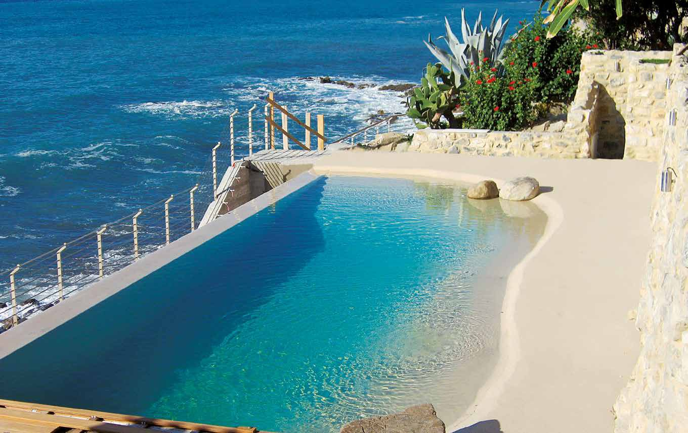
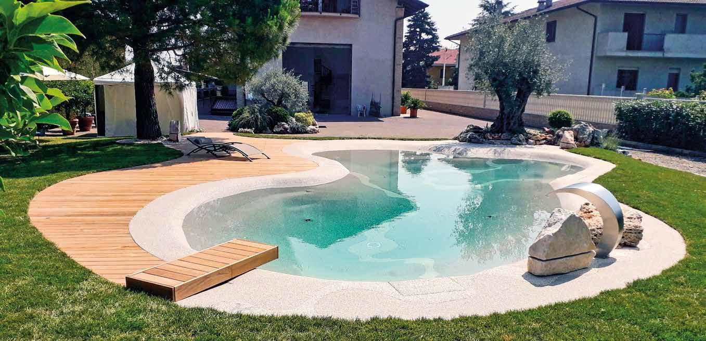
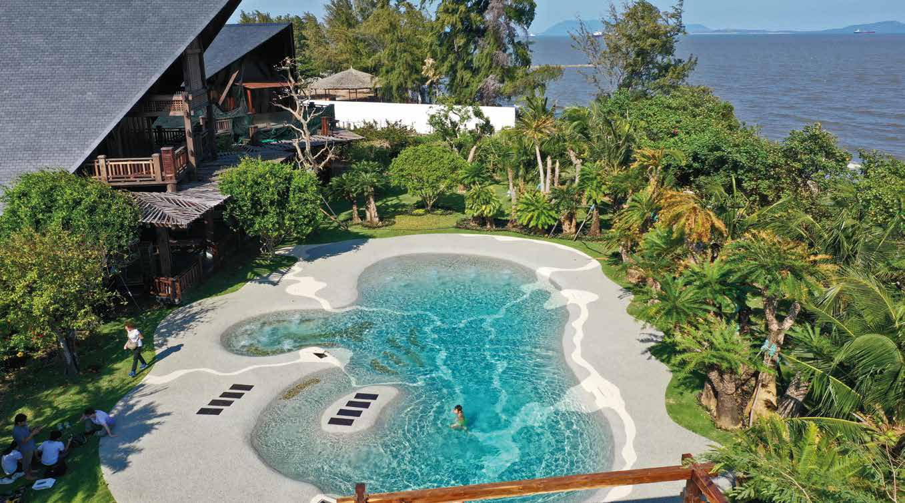
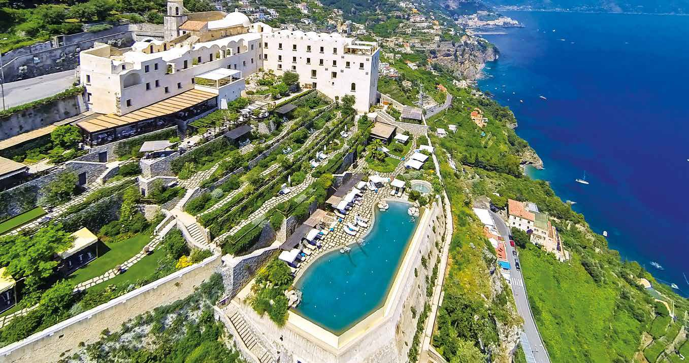
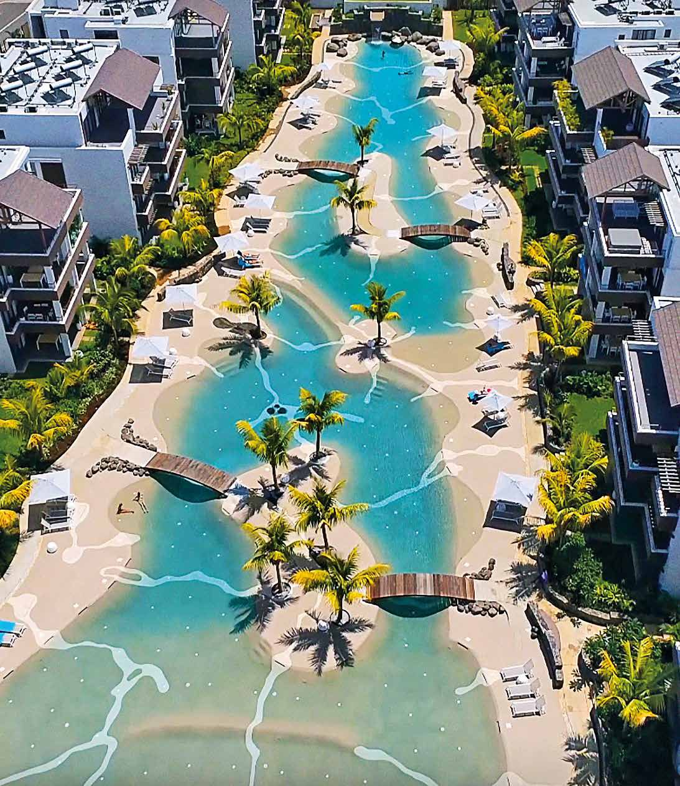
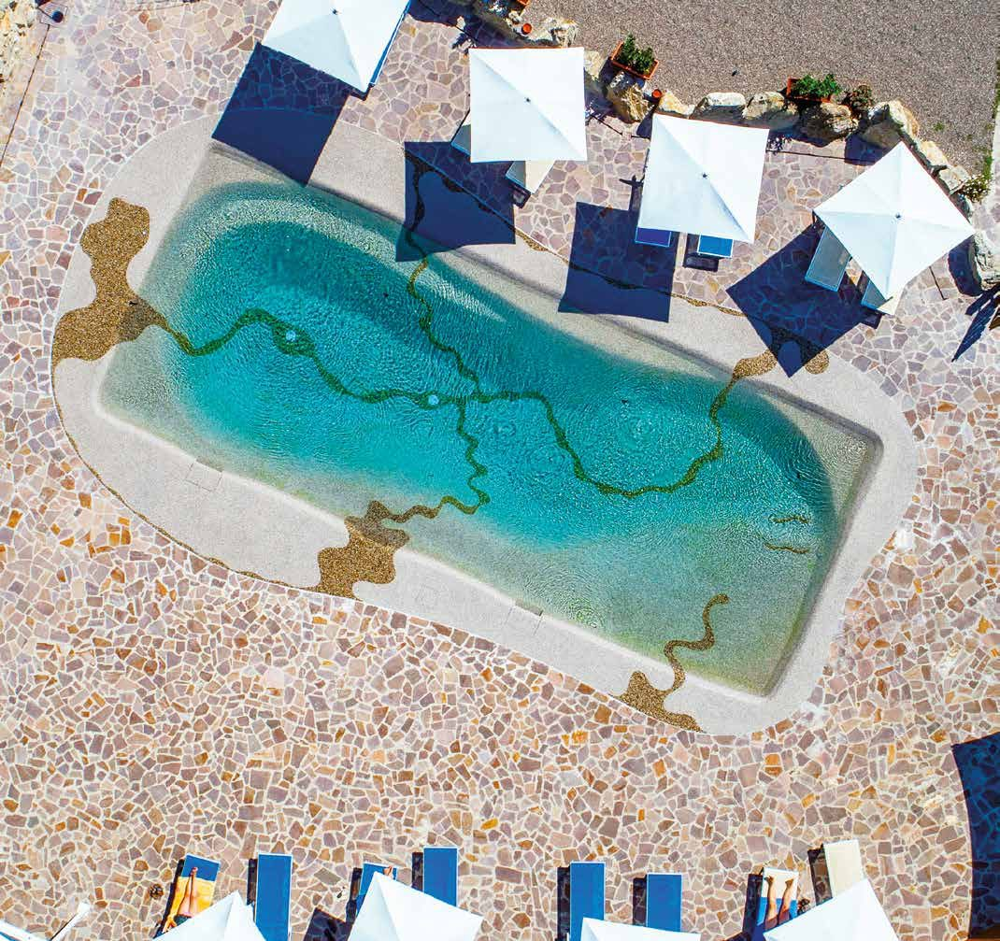
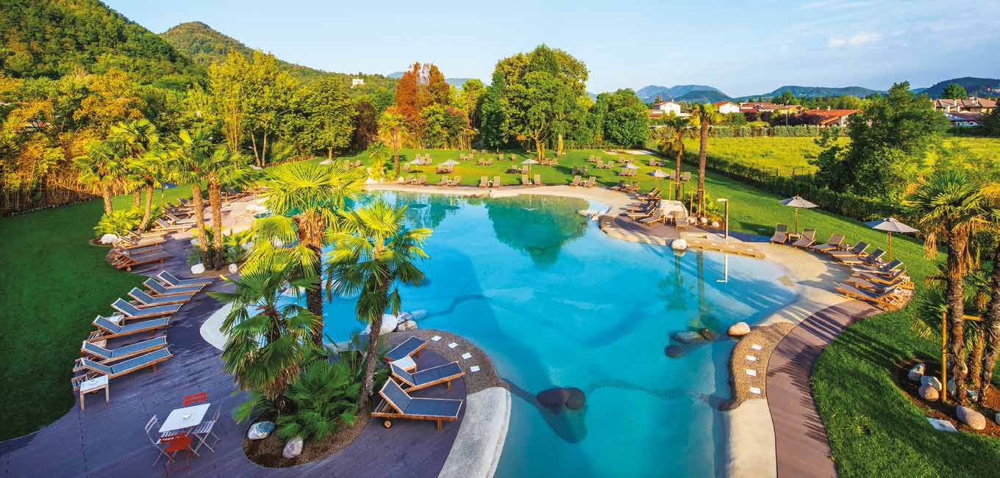
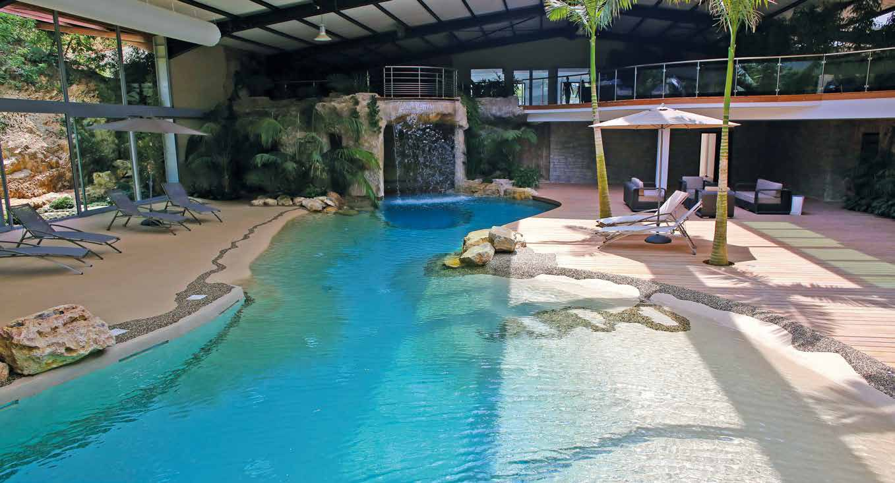
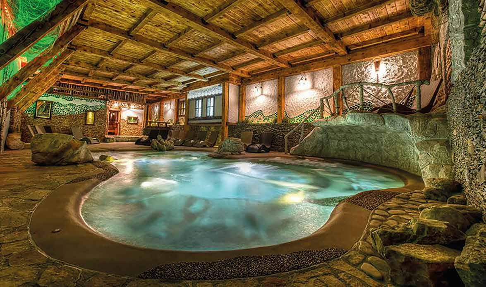
Imágenes: catálogo oficial Bio.design S.p.A. Instalaciones realizadas por la red internacional de concesionarios Bio.design.
Apavi Green diseña e instala piscinas Bio.design en la provincia de Santa Cruz de Tenerife.
Solicitar presupuesto gratis